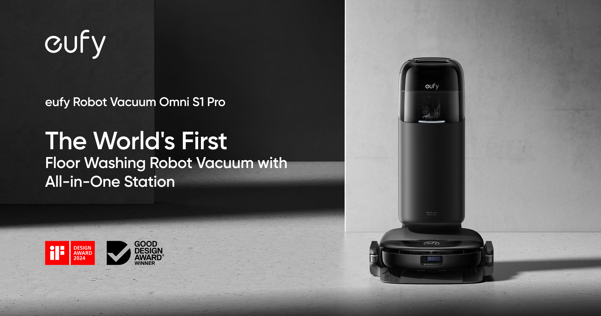

智能服务赛道 · 预赛演示
我会先接住情绪、问清情况，再核对质保与渠道，能办的当场办，换货退款这类重要动作会请人工确认。

LLM 仅生成对话回复；处理过程里的判定与证据始终由本地规则引擎驱动，保证可复现。Key 只保存在本机，不外传。
DeepSeek https://api.deepseek.com/v1 · 阿里百炼兼容模式 https://dashscope.aliyuncs.com/compatible-mode/v1（模型 qwen-plus）
https://api.deepseek.com/v1
https://dashscope.aliyuncs.com/compatible-mode/v1
产品图片来自 Anker / eufy / Spectra 官方公开渠道，仅作演示；订单、质保、价格与工单均为按官方字段结构自建的模拟数据。